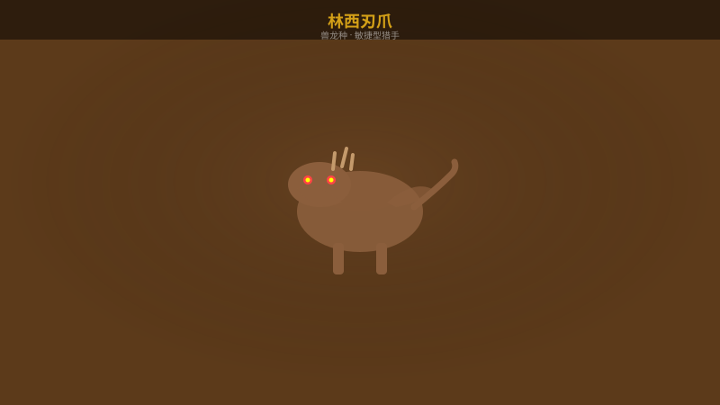
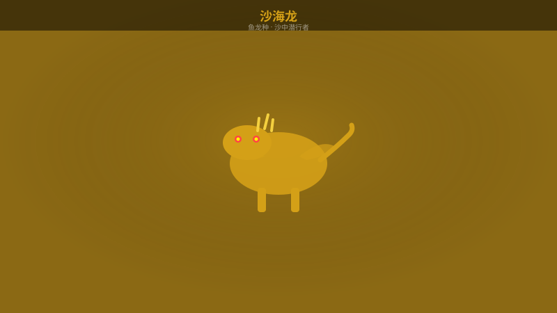
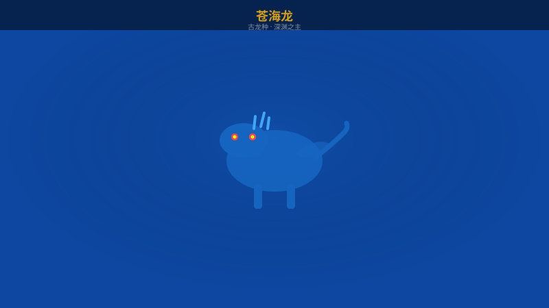
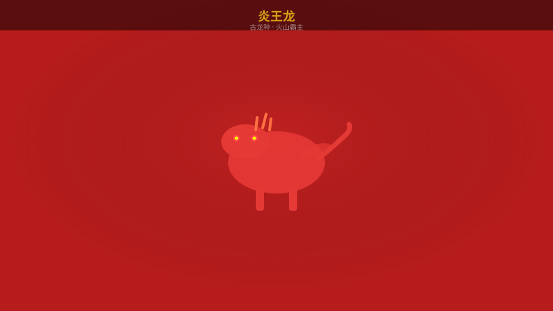
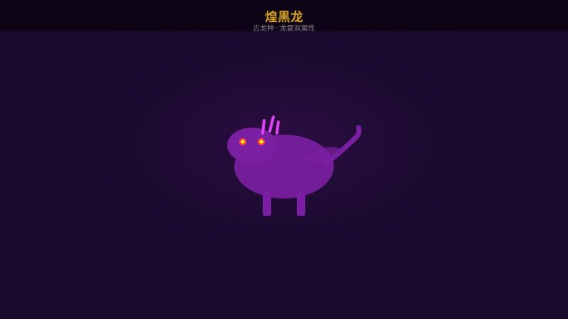
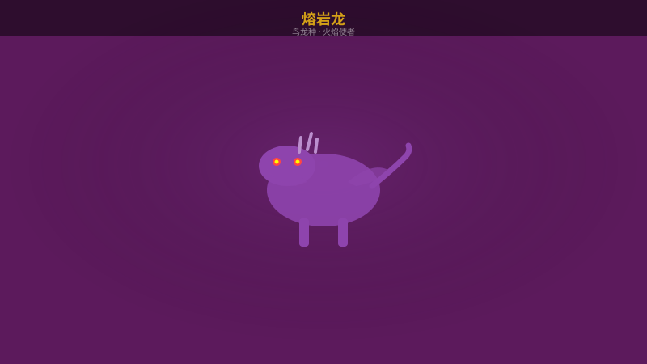

林西刃爪
兽龙种
雷 ⚡ 特攻
火 🔥 有效
主要素材
- 林西刃爪甲
- 林西刃爪爪
- 林西刃爪皮
📋 打法策略
林西刃爪是敏捷型怪物，主要攻击方式为快速连击和突袭。
招式拆解
- 前扑咬 - 向前猛冲咬击，向侧面闪避即可
- 旋风斩 - 旋转身体形成范围攻击，后退拉开距离
- 尾巴扫 - 低角度横扫，跳跃躲避
高效打法
使用雷属性武器攻击头部，积累断尾机会。等它使用前扑咬后硬直时输出。牙猎犬可以牵制它的行动。
全怪物弱点属性、素材掉落、招式拆解与高效打法

林西刃爪是敏捷型怪物，主要攻击方式为快速连击和突袭。
使用雷属性武器攻击头部，积累断尾机会。等它使用前扑咬后硬直时输出。牙猎犬可以牵制它的行动。

沙海龙擅长在沙中潜行，会突然从地下钻出发动攻击。
使用音爆弹逼它现身，趁硬直时集中输出。雷属性武器对它效果很好。

苍海龙是强大的古龙，掌控水的力量，在水下和陆地上都有不同攻击方式。
尽量在水面以上战斗，避免被卷入漩涡。雷属性武器对它效果显著。

炎王龙是火山地带的霸主，全身覆盖熔岩，拥有毁灭性的火焰攻击。
冰属性武器是最佳选择。等它释放熔岩吐息后的硬直期大量输出。注意躲避地震。

最终BOSS，拥有龙属性和雷属性双重能力的终极怪物。战斗分为两个阶段。
血量50%后获得雷属性，攻击速度大幅提升。
全程使用冰属性武器。第一阶段集中输出头部，第二阶段注意走位。利用牙猎龙骑乘打断它的强力招式。带足解毒药和强效治疗药。

熔岩龙是一种小型飞龙，经常群居活动。虽然个体不强，但群体攻击很危险。
先解决小怪再集中攻击首领。冰属性武器效果最好。注意不要被包围。